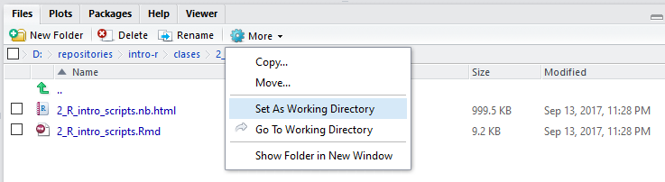
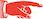

Chapter 3 Transformación-II
3.1 ¿Qué aprendimos la clase pasada?
- Utilizamos R para saber si comparaciones entre dos cantidades son ciertas o no (5 > 6 #FALSE, 6 == 6 #TRUE)
- Aprendimos el uso de los operadores y (&), o (|) y no (!): (5 > 6) | (3 < 4) #TRUE
- Aprendimos las funciones básicas para manipular tablas de datos (paquete dplyr contenido en el tidyverse):
| Funcionalidad | Función | Interpretación |
|---|---|---|
| Seleccionar campos | select(diamonds, carat, cut) | Del data frame diamonds seleccióname los campos carat y cut |
| Seleccionar registros de acuerdo a un criterio | filter(diamonds, cut == “Ideal” | x > 4) | Del data frame diamonds seleccióname los registros (filter) que cumplen “cut ==”Ideal" o (|) “x > 4” |
| Ordenar registros de acuerdo a uno o más campos | arrange(diamonds, carat, depth) | Del data frame diamonds ordéname los registros primero por carat y luego, los que tengan valores iguales, por depth |
| Crear nuevas variables | mutate(diamonds, dollars_per_carat = price / carat) | Usando el data frame diamonds créame la nueva columna dollars_per_carat definida como price / carat |
| Preparar un data frame para calcular resúmenes por grupo | diamonds_agrupado <- group_by(diamonds, cut) | Usando el data frame diamonds, prepárame los datos para calcular resúmenes por valor de la columna cut, y asigna el resultado a la variable diamonds_agrupado |
| Calcular resúmenes por grupo | summarise(diamonds_agrupado, promedio_depth = mean(depth)) | Usando diamonds agrupado, calcúlame el resumen llamado promedio depth definido como la media de depth |
En esta clase aprenderemos a:
- Utilizar el operador pipeline para simplificar la aplicación de funciones de transformación de datos, una tras otra (recordar la tarea, ejercicio 3).
- Miscelánea de funcionalidades avanzadas de transformación de datos:
- joins (uniones de dos o más tablas).
- El paquete tidyr para transformar la estructura de los datos en una tabla.
- Un poco acerca de datos faltantes.
- Leer datos en R.
3.2 El operador pipeline %>%
El ejercicio 3 de la tarea nos introduce a lo tedioso que es aplicar varias funciones para transformar datos una tras otra sin ayuda. Aquí es cuando el operador pipeline entra en acción:
Nos permite encadenar operaciones de manera sencilla, comenzando por el data frame original (diamonds), luego aplicar una transformación, al resultado aplicar otra y así sucesivamente.
Retomemos el ejemplo de la tarea 3. En lugar de:
diamonds_dollars_per_carat <- mutate(diamonds, dollars_per_carat = price / carat)
diamonds_dollars_per_carat## # A tibble: 53,940 x 11
## carat cut color clarity depth table price x y z
## <dbl> <ord> <ord> <ord> <dbl> <dbl> <int> <dbl> <dbl> <dbl>
## 1 0.23 Ideal E SI2 61.5 55 326 3.95 3.98 2.43
## 2 0.21 Premium E SI1 59.8 61 326 3.89 3.84 2.31
## 3 0.23 Good E VS1 56.9 65 327 4.05 4.07 2.31
## 4 0.29 Premium I VS2 62.4 58 334 4.20 4.23 2.63
## 5 0.31 Good J SI2 63.3 58 335 4.34 4.35 2.75
## 6 0.24 Very Good J VVS2 62.8 57 336 3.94 3.96 2.48
## 7 0.24 Very Good I VVS1 62.3 57 336 3.95 3.98 2.47
## 8 0.26 Very Good H SI1 61.9 55 337 4.07 4.11 2.53
## 9 0.22 Fair E VS2 65.1 61 337 3.87 3.78 2.49
## 10 0.23 Very Good H VS1 59.4 61 338 4.00 4.05 2.39
## # ... with 53,930 more rows, and 1 more variables: dollars_per_carat <dbl>diamonds_dollars_per_carat_filtrado <- filter(diamonds_dollars_per_carat, dollars_per_carat < 4000)
diamonds_dollars_per_carat_filtrado## # A tibble: 32,083 x 11
## carat cut color clarity depth table price x y z
## <dbl> <ord> <ord> <ord> <dbl> <dbl> <int> <dbl> <dbl> <dbl>
## 1 0.23 Ideal E SI2 61.5 55 326 3.95 3.98 2.43
## 2 0.21 Premium E SI1 59.8 61 326 3.89 3.84 2.31
## 3 0.23 Good E VS1 56.9 65 327 4.05 4.07 2.31
## 4 0.29 Premium I VS2 62.4 58 334 4.20 4.23 2.63
## 5 0.31 Good J SI2 63.3 58 335 4.34 4.35 2.75
## 6 0.24 Very Good J VVS2 62.8 57 336 3.94 3.96 2.48
## 7 0.24 Very Good I VVS1 62.3 57 336 3.95 3.98 2.47
## 8 0.26 Very Good H SI1 61.9 55 337 4.07 4.11 2.53
## 9 0.22 Fair E VS2 65.1 61 337 3.87 3.78 2.49
## 10 0.23 Very Good H VS1 59.4 61 338 4.00 4.05 2.39
## # ... with 32,073 more rows, and 1 more variables: dollars_per_carat <dbl>diamonds_dollars_per_carat_filtrado_ordenado <- arrange(diamonds_dollars_per_carat_filtrado, desc(dollars_per_carat))
diamonds_dollars_per_carat_filtrado_ordenado## # A tibble: 32,083 x 11
## carat cut color clarity depth table price x y z
## <dbl> <ord> <ord> <ord> <dbl> <dbl> <int> <dbl> <dbl> <dbl>
## 1 1.05 Very Good J SI1 62.5 58 4199 6.47 6.52 4.06
## 2 0.92 Very Good E SI2 63.2 54 3679 6.29 6.25 3.96
## 3 0.92 Premium E SI2 61.8 59 3679 6.19 6.11 3.80
## 4 0.91 Premium E SI2 61.1 59 3639 6.24 6.20 3.80
## 5 0.91 Premium E SI2 62.8 61 3639 6.09 6.07 3.82
## 6 0.90 Premium E SI2 62.6 60 3599 6.18 6.09 3.84
## 7 0.90 Premium E SI2 62.2 60 3599 6.19 6.15 3.84
## 8 0.90 Ideal E SI2 62.0 55 3599 6.23 6.15 3.84
## 9 1.51 Premium H I1 61.9 58 6038 7.39 7.34 4.56
## 10 0.74 Fair G VVS2 65.2 58 2959 5.70 5.60 3.69
## # ... with 32,073 more rows, and 1 more variables: dollars_per_carat <dbl>El ejemplo de la tarea 3 queda:
diamonds %>% # Comenzando con el df diamonds:
mutate(dollars_per_carat = price / carat) %>% # Calcúlame la variable dollars per carat ... LUEGO
filter(dollars_per_carat < 4000) %>% # Seleccióname los registros en que la variable dollars_per_carat < 4000 LUEGO
arrange(desc(dollars_per_carat)) # Ordéname en orden descendente por la variable dollars per carat## # A tibble: 32,083 x 11
## carat cut color clarity depth table price x y z
## <dbl> <ord> <ord> <ord> <dbl> <dbl> <int> <dbl> <dbl> <dbl>
## 1 1.05 Very Good J SI1 62.5 58 4199 6.47 6.52 4.06
## 2 0.92 Very Good E SI2 63.2 54 3679 6.29 6.25 3.96
## 3 0.92 Premium E SI2 61.8 59 3679 6.19 6.11 3.80
## 4 0.91 Premium E SI2 61.1 59 3639 6.24 6.20 3.80
## 5 0.91 Premium E SI2 62.8 61 3639 6.09 6.07 3.82
## 6 0.90 Premium E SI2 62.6 60 3599 6.18 6.09 3.84
## 7 0.90 Premium E SI2 62.2 60 3599 6.19 6.15 3.84
## 8 0.90 Ideal E SI2 62.0 55 3599 6.23 6.15 3.84
## 9 1.51 Premium H I1 61.9 58 6038 7.39 7.34 4.56
## 10 0.74 Fair G VVS2 65.2 58 2959 5.70 5.60 3.69
## # ... with 32,073 more rows, and 1 more variables: dollars_per_carat <dbl>Podemos también asignar el resultado de TODAS las transformaciones anteriores a una variable
diamonds_transformado_1 <- diamonds %>%
mutate(dollars_per_carat = price / carat) %>%
filter(dollars_per_carat < 4000) %>%
arrange(desc(dollars_per_carat))
diamonds_transformado_1## # A tibble: 32,083 x 11
## carat cut color clarity depth table price x y z
## <dbl> <ord> <ord> <ord> <dbl> <dbl> <int> <dbl> <dbl> <dbl>
## 1 1.05 Very Good J SI1 62.5 58 4199 6.47 6.52 4.06
## 2 0.92 Very Good E SI2 63.2 54 3679 6.29 6.25 3.96
## 3 0.92 Premium E SI2 61.8 59 3679 6.19 6.11 3.80
## 4 0.91 Premium E SI2 61.1 59 3639 6.24 6.20 3.80
## 5 0.91 Premium E SI2 62.8 61 3639 6.09 6.07 3.82
## 6 0.90 Premium E SI2 62.6 60 3599 6.18 6.09 3.84
## 7 0.90 Premium E SI2 62.2 60 3599 6.19 6.15 3.84
## 8 0.90 Ideal E SI2 62.0 55 3599 6.23 6.15 3.84
## 9 1.51 Premium H I1 61.9 58 6038 7.39 7.34 4.56
## 10 0.74 Fair G VVS2 65.2 58 2959 5.70 5.60 3.69
## # ... with 32,073 more rows, and 1 more variables: dollars_per_carat <dbl>Otro ejemplo:
- Por combinación de cut y color,
- Calcular el mínimo de x, y también el máximo de y.
- Al resultado ordenarlo por color de manera descendente.
diamonds_transformado_2 <- diamonds %>%
# Primero agrupo por combinación de cut y color, ya que lo necesito para calcular
# los resúmenes por grupo
group_by(cut, color) %>%
# Luego calculo los resúmenes por grupo
summarise(minimo_x = min(x), maximo_y = max(y)) %>%
# Finalmente ordeno por color
arrange(desc(color))
diamonds_transformado_2## # A tibble: 35 x 4
## # Groups: cut [5]
## cut color minimo_x maximo_y
## <ord> <ord> <dbl> <dbl>
## 1 Fair J 4.24 10.54
## 2 Good J 4.22 9.19
## 3 Very Good J 3.94 8.93
## 4 Premium J 4.22 9.94
## 5 Ideal J 3.93 9.20
## 6 Fair I 4.62 9.02
## 7 Good I 4.19 9.31
## 8 Very Good I 3.95 9.94
## 9 Premium I 3.97 10.10
## 10 Ideal I 3.94 9.42
## # ... with 25 more rows3.3 Miscelánea de funcionalidades avanzadas de transformación de datos
Con dplyr:
- Realizar joins entre dos tablas.
Con tidyr:
- Spread: transformar registros en campos
- Gather: transformar campos en registros
- Separate: separar variables
3.3.1 1. Joins: inner_join(df1, df2, columnas_a_seleccionar)
Es común encontrarse tablas que hacer referencia la una a la otra, por ejemplo:
| id | tipo |
|---|---|
| 1 | letra |
| 2 | número |
| 3 | caracter especial |
| id | caracter | tipo_caracter_id |
|---|---|---|
| 1 | a | 1 |
| 2 | 2 | 2 |
| 3 | 3 | 2 |
| 4 | 1 | 2 |
| 5 | z | 1 |
| 6 | 5 | 2 |
| 7 | m | 1 |
| 8 | 7 | 2 |
| 9 | s | 1 |
| 10 | x | 1 |
Para asociar a cada caracter su tipo, podemos utilizar una funcionalidad llamada join, que básicamente asocia registros de dos tablas usando campos en común.
# Definiendo las tablas anteriores (normalmente estas tablas se leerán de archivos
# CSV o bases de datos como se verá en esta clase).
tipos_caracter <- data_frame(
id = c(1, 2, 3),
tipo = c("letra", "número", "caracter especial")
)
tipos_caracter## # A tibble: 3 x 2
## id tipo
## <dbl> <chr>
## 1 1 letra
## 2 2 número
## 3 3 caracter especialcaracteres <- data_frame(
id = 1:10,
caracter = c("a", "2", "3", "1", "z", "5", "m", "7", "s", "x"),
tipo_caracter_id = c(1, 2, 2, 2, 1, 2, 1, 2, 1, 1)
)
caracteres## # A tibble: 10 x 3
## id caracter tipo_caracter_id
## <int> <chr> <dbl>
## 1 1 a 1
## 2 2 2 2
## 3 3 3 2
## 4 4 1 2
## 5 5 z 1
## 6 6 5 2
## 7 7 m 1
## 8 8 7 2
## 9 9 s 1
## 10 10 x 1# Haciendo el join de las tablas anteriores
inner_join(caracteres, tipos_caracter, by = c("tipo_caracter_id" = "id"))## # A tibble: 10 x 4
## id caracter tipo_caracter_id tipo
## <int> <chr> <dbl> <chr>
## 1 1 a 1 letra
## 2 2 2 2 número
## 3 3 3 2 número
## 4 4 1 2 número
## 5 5 z 1 letra
## 6 6 5 2 número
## 7 7 m 1 letra
## 8 8 7 2 número
## 9 9 s 1 letra
## 10 10 x 1 letra# Notemos que el orden importa para renombrar y ordenarlas columnas
inner_join(tipos_caracter, caracteres, by = c("id" = "tipo_caracter_id"))## # A tibble: 10 x 4
## id tipo id.y caracter
## <dbl> <chr> <int> <chr>
## 1 1 letra 1 a
## 2 1 letra 5 z
## 3 1 letra 7 m
## 4 1 letra 9 s
## 5 1 letra 10 x
## 6 2 número 2 2
## 7 2 número 3 3
## 8 2 número 4 1
## 9 2 número 6 5
## 10 2 número 8 7# Existen muchos tipos de joins, y también joins por más de un campo. Para ver
# estas opciones consultar la ayuda de R: ?inner_join. Expresa el join anterior usando el pipeline.
Expresa el join anterior usando el pipeline.
Evalúa las siguientes expresiones y explica con tus palabras el resultado.
left_join(tipos_caracter, caracteres, by = c("id" = "tipo_caracter_id"))
semi_join(tipos_caracter, caracteres, by = c("id" = "tipo_caracter_id"))
anti_join(tipos_caracter, caracteres, by = c("id" = "tipo_caracter_id"))3.3.2 Un intermedio. Lectura de datos en R
La mecánica de lectura en R es sencilla y, sin importar el tipo de archivo que se quiera cargar a nuestro espacio de trabajo, siempre tiene la misma forma: se utiliza una función preparada para cargar un cierto tipo de archivo y luego se le debe indicar a R dónde está el archivo (de este tipo) que se desea cargar.
R tiene tiene una única manera de saber dónde buscar un archivo. Debe recibir una dirección que le indique dónde buscar físicamente el archivo de interés.

R puede “ver” lo que sea que le muestres, esto es, puedes decirle exáctamente dónde debe buscar un archivo, por ejemplo indicando con una cadena de texto una ruta completa en nuestro sistema de archivos (disco duro): “D:\repositories\intro-r\”. Estas rutas se pueden escribir manualmente, o se pueden copiar del explorador de archivos de nuestro sistema operativo y luego pegarla en R.

Es muy importante notar que en Windows, la convención es usar diagonales invertidas “\” para separar los niveles de nuestra ruta. R no va a entender que algo es una ruta si está construída con estos símbolos. Si se copia y pega una ruta desde nuestro explorador de archivos en Windows, debemos cambiar las diagonales invertidas por diagonales: “D:/repositories/intro-r/”.
Otra posibilidad, también ya mencionada, es indicarle a R que “vea” una carpeta de trabajo. En este momento R está “viendo” la siguiente carpeta:
getwd()## [1] "/Users/agutierrez/Documents/R/r"Estoy indica que R no necesita una ruta completa para leer cualquier cosa incluída en la carpeta anterior. Únicamente el archivo. Para cambiar la carpeta de trabajo se utiliza la funcón setwd() que como argumento escencial recibe una ruta.
Se recomienda trabajar un proyecto dado en un carpeta que a su vez contenga una carpeta que amacene los datos que se usen para ese proyecto en particular. Por ejemplo una carpeta llamada “datos”, así las rutas a los archivos siempre pueden ser carpetas relativas. No importa si la carpeta del proyecto se copia a otro equipo de cómputo, bastará con hacer setwd() a la carpeta del proyecto para que todo el código funcione.
Otra cosa que vale la pena mencionar es que RStudio incluye un explorador de archivos, ahí se puede navegar en las carpetas de nuestra computadora y con las opciones disponibles en el ícono de engrane se puede también asignar la carpeta de trabajo.

Es común que las tablas de datos se distribuyan como archivos de texto. Existen numerosas variaciones de estos archivos de texto y csvs.
El tidyverse incluye al paquete readr que tiene como objetivo convertir este tipo de archivos en data frames, aunque archivos de este tipo delimitados por comas es lo más común, nos podemos encontrar con archivos delimitados por otros símbolos, de aquí que existan las siguiente funciones:
- read_csv2() que lee archivos separados por punto y comas “;”
- read_tsv() lee archivos separados por Tabs
- read_delim() lee archivos separados por cualquier símbolo (tú lo determinas con un argumento)
- read_fwf() lee archivos de anchos fijos, se pueden especificar los anchos con fwf_widths() o su posición en el espacio (fila de datos) con fwf_positions().
- read_table() lee un caso muy particular y popular de lo anterior que son archivos con datos separados por un único espacio.
Como ya se mencionó, todas estas funciones tienen una sintaxtis similar. Lo más importante es alimentarles bien la ruta del archivo que se desea leer.
Aunque este tipos de archivos son extremadamente populares en el mundo de los archivos de datos, existen numerosas otras presentaciones. Por ejemplo, es muy común el uso de Microsoft Excel para análisis cuantitativo. R está bien preparado para leer y escribir archivos excel.
Bajaremos datos de Incidencia de Víctimas de homicidio, secuestro y extorsión de datos.gob.mx:
https://datos.gob.mx/busca/dataset/victimas-de-homicidio-secuestro-y-extorsion-excel
Para leer estos datos se utilizaremos el paquete readxl (no se les olvide instalarlo)
# cargar el paquete
library("readxl")
# ¿dónde está el archivo? recordar usar rutas relativas:
ruta_relativa <- "./datos/Estatal_Victimas_2015_2018_feb.xlsx"
# leer este archivo
datos <- read_excel(ruta_relativa,sheet=1)3.3.3 2. Usar spread para transformar registros de un data frame en campos.
Al transformar registros en campos, se quitan renglones y se agregan columnas, lo que se llama datos anchos.
Es importante notar que gather y spread son funciones inversas.
Primero veamos el estado original de la tabla de datos, tiene múltiples columnas que corresponden a muchos cortes en la naturaleza de los crímenes cometidos (Estado donde se comentió, mes cuando se comentió, sexo de la víctima, tipo de crimen, etc).
# renombrar la primera variable porque incluye un molesto símbolo especial: ~
datos <- rename(datos, Anio = Año)
# generar totales por mes
datos <- datos %>%
mutate(total = select(.,Enero:Diciembre) %>% rowSums())Ahora sí vamos a pasar la tabla de datos a un formato largo con base en los tipos de delitos
# trabajar sólo Homicidios y Feminicidios, pasar a los datos a formato largo por año
# Usando la función spread para transformar registros en campos:
# key: variable cuyos valores definirán los nombres de nuestros campos. Para
# revertir el data frame usaremos "enfermedad"
tipos_delito = datos %>%
spread(key = `Tipo de delito`, value = total)Ya que está en formato largo, se puede generar una útil tabla de conteo de delitos cruzado por Entidad, Año y Sexo.
# cantidad de subtipos de delito por entidad, año y sexo
cantidad_tipos <- tipos_delito %>%
group_by(Entidad,Anio,Sexo) %>%
summarise_at (.vars=vars(Aborto:Secuestro),.funs=sum,na.rm=TRUE)3.3.4 3. Usar gather para transformar campos de un data frame en registros
Al transformar campos en registros, se quitan columnas y se agregan renglones al data frame. Esto se llama datos largos.
Podemos usar esta operación para eliminar las columnas-delitos de la tabla de datos anterior y agregarla a unas columnas de conteos por delito (estructura: nombre delito, conteo)
# Usando la función gather para transformar campos en registros:
# key: nombre de la columna con los nombres de los campos (ahora registros)
# value: nombre de la columna con los valores de los campos (numero_pacientes)
# lo que sigue son las columnas que definen los campos que se transformarán en renglones
cantidad_tipos_largos <- gather(cantidad_tipos,
key = "tipo_delito",
value = "num_delitos_cometidos",
Aborto:Secuestro) A partir de los datos originales, crear otra tabla que sea interesante utilizando las funciones gather o spread y las otras funciones de manipulación vistas hasta ahora. Investigar el uso de la función de escritura de texto delimitado write_csv(), también del paquete reader, y utilizarla para guardar la tabla de datos anterior a su carpeta “datos”.
3.3.5 4. Separar una columna en dos o más: separate(df, col = columna, into = c(nueva_variable_1, nueva_variable_2, etc)
Separate es una función útil para separar una columna de un data frame en varias columnas, cuyos nombres se especifican. La separación default se realiza por caracteres especiales (., _, espacios, etc). Por ejemplo:
instructores_curso_r <- data_frame(
id = c(1,2,3),
nombre = c(
"Amaury Gutiérrez",
"Teresa Ortiz",
"Julian_Equihua"
)
)
instructores_curso_r## # A tibble: 3 x 2
## id nombre
## <dbl> <chr>
## 1 1 Amaury Gutiérrez
## 2 2 Teresa Ortiz
## 3 3 Julian_Equihuaseparate(instructores_curso_r, nombre, into = c("nombre", "apellido_1"))## # A tibble: 3 x 3
## id nombre apellido_1
## * <dbl> <chr> <chr>
## 1 1 Amaury Gutiérrez
## 2 2 Teresa Ortiz
## 3 3 Julian Equihua Evalúa las siguientes expresiones, y explica con tus palabras lo que sucede
instructores_curso_r_1 <- data_frame(
id = c(1,2,3),
nombre = c(
"Fernando Pardo Urrutia",
"Teresa Ortiz",
"Julian_Equihua"
)
)
separate(instructores_curso_r_1, nombre, into = c("nombre", "apellido_1"))
separate(instructores_curso_r_1, nombre, into = c("nombre", "apellido_1", "apellido_2")) Da una explicación intuitiva de lo que es el NA
3.4 Datos faltantes
Un NA es un dato faltante, es decir, un vacío en una tabla. Como en R los data frames contienen un elemento en cada campo, estos vacíos se traducen como datos faltantes.
Como son vacíos de información, los datos faltantes se pueden pensar como “no sé”
NA # Dato Faltante## [1] NANA + 3 # No se + 3 = No sé## [1] NANA * 3 # No se * 3 = No sé## [1] NAis.na(NA) # Un operador binario para preguntar si un dato es faltante (NA)## [1] TRUEis.na(5.3)## [1] FALSEis.na(FALSE)## [1] FALSEFALSE | NA # No se cuánto da FALSE ó NA## [1] NATRUE | NA # Pero TRUE o NA sí, porque sabemos que verdadero ó lo que sea ya es verdadero: como (5 > 3) | (1 > 3)## [1] TRUENA > 5 # ¿Es NO SE > 5? NO Sé## [1] NANA == NA #¿Es NO SE igual a NO SÉ? NO SÉ## [1] NAsum(c(4, 5, 6, NA)) # No se cuanto da la suma de algo 4, 5, 6, y no sé.## [1] NAsum(c(4, 5, 6, NA), na.rm = TRUE) # Pero puedo decirle a R que remueva los NA's## [1] 15mean(c(4, 5, 6, NA), na.rm = TRUE)## [1] 5# Dado un data frame con datos faltantes
registro <- data_frame(
id = c(1, 2, 3),
persona = c("Fernando", NA, "Julián"),
numero_socio = c(13, 12, NA)
)
registro## # A tibble: 3 x 3
## id persona numero_socio
## <dbl> <chr> <dbl>
## 1 1 Fernando 13
## 2 2 <NA> 12
## 3 3 Julián NA# Puedo seleccionar renglones con NA:
registro %>%
filter(is.na(persona))## # A tibble: 1 x 3
## id persona numero_socio
## <dbl> <chr> <dbl>
## 1 2 <NA> 12# O renglones sin NA:
registro %>%
filter(!is.na(persona))## # A tibble: 2 x 3
## id persona numero_socio
## <dbl> <chr> <dbl>
## 1 1 Fernando 13
## 2 3 Julián NA# Puedo usar las reglas anteriores para calcular nuevas columnas:
registro %>%
mutate(numero_socio_nuevo = numero_socio + 1)## # A tibble: 3 x 4
## id persona numero_socio numero_socio_nuevo
## <dbl> <chr> <dbl> <dbl>
## 1 1 Fernando 13 14
## 2 2 <NA> 12 13
## 3 3 Julián NA NA# Puedo ordenar y los NA's quedan al final
registro %>%
arrange(numero_socio)## # A tibble: 3 x 3
## id persona numero_socio
## <dbl> <chr> <dbl>
## 1 2 <NA> 12
## 2 1 Fernando 13
## 3 3 Julián NA# Puedo ordenar y los NA's quedan al final
registro %>%
arrange(desc(numero_socio))## # A tibble: 3 x 3
## id persona numero_socio
## <dbl> <chr> <dbl>
## 1 1 Fernando 13
## 2 2 <NA> 12
## 3 3 Julián NA# Tengo que tener cuidado con calcular resúmenes de data frames que contienen NA's
registro %>%
summarise(promedio = mean(numero_socio))## # A tibble: 1 x 1
## promedio
## <dbl>
## 1 NA# Pero puedo arreglarlo fácilmente
registro %>%
summarise(promedio = mean(numero_socio, na.rm = TRUE))## # A tibble: 1 x 1
## promedio
## <dbl>
## 1 12.5 Entregar un script donde se lleve a cabo un proceso de manipulación y transformación de datos sobre la tabla de delitos. Adicionalmente generar un gráfico interesante utilizando lo visto en las clases de visualización de datos. Comentar cada paso y explicar qué comunica la gráfica generada.